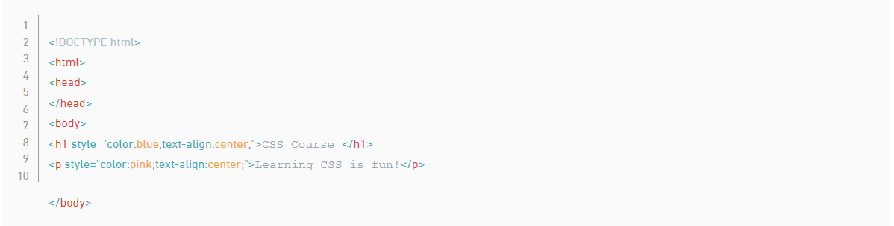
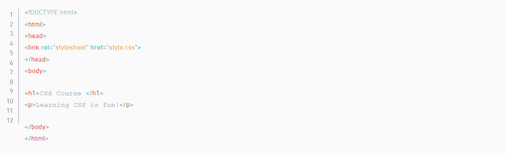

وهناك ثلاث طرق لإضافة كود CSS لتنسيق صفحات الويب:
وهي طريقة يمكن استخدامها في حال كان هناك تنسيق مُختلف لكل عنصر. ويكون التنسيق مكتوب بداخل العنصر المراد تنسيقه وذلك بإضافة السمة style والتي من الممكن أن تحتوي على خصائص CSS. مثال على ذلك:
يوضح الكود في المثال أعلاه كيفية استخدام التصميم المضمن. يحتوي عنصر h1 على سمة نمط داخل علامة الفتح الخاصة به. بعد ذلك ، يتم تعيين سمة النمط على أنها مساوية لـ color: blue ؛ والتي ستعمل على ضبط لون نص الرأس على اللون الأزرق داخل المتصفح. وينطبق الشيء نفسه على عنصر الفقرة حيث يتم تعيين سمة النمط لتساوي اللون الوردي بحيث يتم عرض الفقرة باللون الوردي داخل المتصفح
إذا كنت ترغب في إضافة أكثر من نمط مع أنماط مضمنة ، فما عليك سوى الاستمرار في الإضافة إلى سمة النمط. تأكد من إنهاء الأنماط بفاصلة منقوطة (؛).
من المهم معرفة أن الأنماط المضمنة هي طريقة سريعة لتصميم عنصر HTML مباشرةً ، ولكن نادرًا ما يتم استخدامها عند إنشاء مواقع الويب. ولكن قد تواجه ظروفًا يكون فيها التصميم الداخلي ضروريًا ، لذا فإن فهم كيفية عمله والتعرف عليه في كود HTML يعد معرفة جيدة.
وهي طريقة يمكن استخدامها في حال هناك تنسيق مختلف لكل صفحة ويب ويكون التنسيق مكتوب داخليًا في ملف HTML وتحديدًا في داخل العنصر < style>
الموجود في داخل العنصر . مثال على ذلك:
ما ذكرنا سابقًا ، لا تعد الأنماط المضمنة أفضل طريقة لتصميم عناصر HTML.
لحسن الحظ ، تسمح لك HTML بكتابة كود CSS في قسمها المخصص مع وجود عنصر < style> متداخل داخل عنصر < head>. غالبًا ما يُشار إلى كود CSS الموجود داخل عنصر < style> بصفحة أنماط داخلية.
تحتوي ورقة الأنماط الداخلية على مزايا معينة وحالات استخدام على الأنماط المضمنة ، ولكنها مرة أخرى ليست أفضل الممارسات. ومع ذلك ، فإن فهم كيفية استخدام أوراق الأنماط الداخلية هو معرفة مفيدة.
لإنشاء ورقة أنماط داخلية ، يجب وضع عنصر < style> داخل عنصر < head>.
بعد إضافة علامات الفتح والإغلاق < style> في قسم الرأس ، يمكنك البدء في كتابة كود CSS.
وهي عبارة عن External Style Sheet أو ملف منفصل يوجد فيه جميع التنسيقات ويمكنك تغيير تنسيق موقع كامل من ملف واحد فقط، ويجب لكل ملف HTML أن يحتوي على ما يشير لملف التنسيق CSS وذلك يكون عن طريق العنصر في ملف HTML. مثال على طريقة إضافة ملف CSS والإشارة له عن طريق العنصر من HTML:

يتجنب المطورون خلط التعليمات البرمجية عن طريق تخزين كود HTML و CSS في ملفات منفصلة (تحتوي ملفات HTML على كود HTML فقط ، وتحتوي ملفات CSS على كود CSS فقط).
باستخدام ورقة الأنماط الخارجية ، يمكنك كتابة جميع تعليمات CSS البرمجية اللازمة لتصميم صفحة دون التضحية بقابلية قراءة ملف HTML الخاص بك وقابلية صيانته.